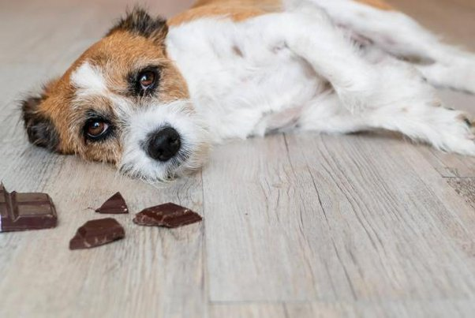
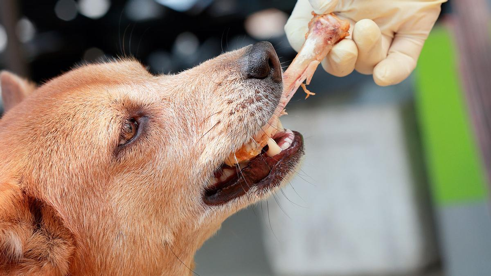

los cachorros son muy delicados.Por lo tanto son una gran responsabilidad normalmente los cachorros no pueden comer de lo que sea,y algunas cosas son mortales como:
Tambien hay cosas que nuestros cachorros pueden comer pero moderadamente como:
tambien hay cosas que no son recomendadas para tu cachorro como:
tambien hay cosas que si le puedes dar a tu cachorro y no se enfermara como:
Si el cachorro come amenudo pequeñas cantidades de cebolla pueden presentarse síntomas de anemia a lo largo de un período más prolongado. Estos síntomas son mucosas blanquecinas, deterioro del estado físico e incremento del pulso y la frecuencia respiratoria.
Algunos de los síntomas más comunes son los vómitos, diarrea, temblor muscular, taquicardia, cianosis, hipertermia o hipertensión. Si la intoxicación es grave, la toma de chocolate puede llegar a provocar convulsiones, aceleración del ritmo cardiaco e incluso, en casos extremos, el coma y la muerte.
Las bebidas alcohólicas y los productos alimenticios que contienen alcohol pueden causar vómitos, diarrea, disminución de la coordinación, depresión del sistema nervioso central, dificultad para respirar, temblores, coma e incluso la muerte. Bajo ninguna circunstancia debe darle a su mascota alcohol.
El aguacate contiene persin, una sustancia tóxica que se origina en un hongo, “y que resulta venenosa para muchos animales, entre ellos, nuestros perros, gatos y aves, ya que puede causarles problemas gástricos, como vómitos o diarrea, incluso pancreatitis o un fallo cardiaco”, añade el ...
En el caso de que tu perro haya comido ajo en cantidades inadecuadas, pueden aparecer síntomas de intoxicación de manera inmediata o incluso cinco días después de la ingesta. Los síntomas de la intoxicación por ajo en perros pueden ir apareciendo de manera progresiva y suelen ser: Vómitos. Diarrea.
Las enfermedades reportadas a la FDA por los dueños y los veterinarios de perros que han comido huesos comerciales incluyen: Obstrucción gastrointestinal (obstrucción en el tracto digestivo) Asfixia. Cortes y heridas en la boca o en las amígdalas.
Recuerda que el inconveniente no está en el alimento como tal, sino en la cantidad que se suministra a las mascotas. Es un hecho que, en pequeñas porciones, los frutos secos no deberían causarle problemas. Si premias a tu perro con una nuez de macadamia, no tendrá repercusiones en su salud.
Los perros son, por lo general, intolerantes a la lactosa. No producen enzimas necesarias para disolver el azúcar que contiene la leche. Pueden producirles diarrea o vómitos si consumen mucha cantidad. En su lugar puedes ofrecerle leche vegetal (de avena) o leche sin lactosa, pero reducida con agua.
Según Experto Animal, a parte de una intoxicación, su ingesta puede ocasionar insuficiencia renal aguda. De hecho, los perros que han comido uvas o pasas corren el riesgo de sufrir una insuficiencia renal total entre las 48 y 72 horas siguientes a la ingesta de esta fruta prohibida.
Y es que el café, igual que el té o la cola, contiene altos niveles de cafeína. Si un perro o un gato lo ingirieran en grandes cantidades, podría manifestar síntomas de intoxicación como nerviosismo, hiperactividad, subida de palpitaciones y, en el peor de los casos, un colapso o la muerte.
Si el azúcar de caña ya es malo para nosotros, para el perro, cuyo sistema de regulación de la glucosa no es tan eficiente como el nuestro, resulta altamente desaconsejable. Sobre todo en altas concentraciones puede provocarles serias hiperglucemias, aunque depende de la relación de tamaño y actividad del perro.